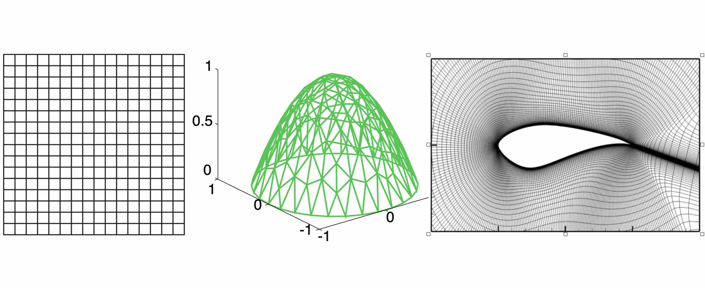

Neural Operators: an Introduction
Here, we introduce neural operators, a class of models that learn mappings between function spaces and solve partial differential equations. You can also check out the papers [1] and [2] for more formal derivations, as well as the blog post [3].
Introduction
Scientific computations are expensive. It could take days and months for numerical solvers to simulate fluid dynamics and many-body motions. Because to achieve good accuracy, the numerical solvers need to discretize the space and time into very fine grids and solve a great number of equations on the grids. Recently, people are developing data-driven methods based on machine learning techniques such as deep learning. Instead of directly solving the problems, data-driven solvers learn from the data of the problems and solutions. When querying new problems, data-driven solvers can directly give predictions based on the data. Since they don’t need to discretize the space into very small pieces and solve all these equations, these data-driven solvers are usually much faster compared to traditional numerical solvers.
However, data-driven solvers are subject to the quality of the data given. If the training data is not good enough, they can’t make good predictions. In scientific computing, usually, the training data are generated by the traditional numerical solvers. And to generate good enough data, it still takes days and months for these numerical solvers. Sometime, data are observed from experiments and there are just no good training data. Especially, people consider neural networks as interpolators which may not be able to extrapolate. It is unclear whether neural networks can generalize to unseen data. So if the training data are of one resolution, the learned solvers can only solve the problem in this specific resolution. In general, generalization is a crucial problem in machine learning. It becomes a trade-off: these machine learning based methods make evaluation easier, but the training process could be even more painful.
To dealing with this problem, we purpose operator learning. By encoding certain structures, we let the neural network learn the mapping of functions and generalize among different resolutions. As a result, we can first use a numerical method generated some less-accurate, low-resolution data, but the learned solver is still able to give reasonable, high-resolution predictions. In some sense, both training and evaluation can be pain-free.
Operator Learning
In mathematics, operators are usually referring to the mappings between function spaces. You most likely have already encountered some operators. For example, the differentiation and integration are operators. When we take the derivative or do an indefinite integration of a function, we will get another function. In other words, the differentiation and integration are mappings from function space to function space.
In scientific computing, usually the problem is to solve some form of differential equations. Consider a general differential equation of the form:
where \(u\) and \(f\) are some functions on the physical domain, and \(\mathcal{L}\) is some differential operator that maps the function \(u\) to the function \(f\). Usually, \(\mathcal{L}\) and \(f\) are given. The task is to solve for \(u\). That is, we want to learn an operator like the inverse of \(\mathcal{L}\) that maps the function \(f\) to the function \(u\). So the problem of PDE is indeed an operator learning problem.
The classical development of neural networks has been primarily for mappings between a finite-dimensional Euclidean space and a set of classes (e.g. an image vector to a label), or between two finite-dimensional Euclidean spaces (e.g. an image vector to another image vector). However, many problems in physics and math involve learning the mapping between function spaces, which poses a limitation on the classical neural network based methods. Besides all these problem governed by differential equations, we are learning operators in many common machine learning setting. For a bold example, images should be considered as functions of light defined on a continuous region, instead of as \(32 \times 32\) pixel vectors.
In this work, we aim to generalize neural networks so that they can learn operators, the mappings between infinite-dimensional spaces, with a special focus on PDEs.
Limitation of Fixed Discretization
PDEs are, unfortunately, hard. Instead of learning the operator, people usually discretize the physical domain and cast the problem in finite-dimensional Euclidean space. Indeed, hundred years of effort has been made to develop numerical solvers such as the finite element method and finite difference method.
{kind=link}
Three examples of discretization. The left one is a regular grid used in the finite difference method; the middle one is a triangulated grid used in the finite element method; the right one is a cylinder mesh for real-world airfoil problem.
Just like how we store images by pixels in .PNG and .JPG formats, we need to discretize the domain of PDEs into some grid and solve the equation on the grid. It really makes the thing easier. These traditional numerical solvers are awesome, but they have some drawbacks:
The error scales steeply with the resolution. We need a high resolution to get good approximations.
The computation and storage steeply scale with the resolution (i.e. the size of the grid).
When the equation is solved on one discretization, we cannot change the discretization anymore.
.PNG and .JPG formats are good. But sometimes maybe we want to save the images as vector images in .EPS or .SVG formats, so that it can be used and displayed in any context. And for some images, the vector image format is more convenient and efficient. Similarly, we want to find the continuous version for PDEs, an operator that is invariant of discretization.
Furthermore, mathematically speaking, such continuous, discretization-invariant format is in some sense, closer to the real, analytic solution. It has an important mathematical meaning. Bear the motivation in mind. Let’s develop a rigorous formulation.
Problem Setting
Let’s be more concrete. Consider the standard second order elliptic PDE
for some bounded, open domain \(D \subset \mathbb{R}^d\) and a fixed source function \(f\). This equation is prototypical of PDEs arising in numerous applications including hydrology and elasticity. For a given function \(a\), the equation has a unique weak solution \(u\) and therefore we can define the solution operator \(\mathcal{F}_{true}\) as the map from function to function \(a \mapsto u\).
Our goal is to learn a operator \(\mathcal{F}\) approximating \(\mathcal{F}_{true}\), by using a finite collection of observations of input-output pairs \(\{a_j, u_j\}_{j=1}^N\), where each \(a_j\) and \(u_j\) are functions on \(D\). In practice, the training data is solved numerically or observed in experiments. In other words, functions \(a_j\) and \(u_j\) come with discretization. Let \(P_K = \{x_1,\dots,x_K\} \subset D\) be a \(K\)-point discretization of the domain \(D\) and assume we have observations \(a_j|_{P_K}, u_j|_{P_K}\), for a finite collection of input-output pairs indexed by \(j\). We will show how to learn a discretization-invariant mapping based on discretized data.
Kernel Formulation
For a general PDE of the form:
Under fairly general conditions on \(\mathcal{L}_a\), we may define the Green’s function \(G : D \times D \to \mathbb{R}\) as the unique solution to the problem
where \(\delta_x\) is the delta measure on \(\mathbb{R}^d\) centered at \(x\). Note that \(G\) will depend on the coefficient \(a\) thus we will henceforth denote it as \(G_a\). Then operator \(\mathcal{F}_{true}\) can be written as an integral operator of green function:
Generally the Green’s function is continuous at points \(x \neq y\), for example, when \(\mathcal{L}_a\) is uniformly elliptic. Hence it is natural to model the kernel via a neural network \(\kappa\). Just as the Green function, the kernel network \(\kappa\) takes input \((x,y)\). Since the kernel depends on \(a\), we let \(\kappa\) also take input \((a(x),a(y))\).
As an Iterative Solver
In our setting, \(f\) is an unknown but fixed function. Instead of doing the kernel convolution with \(f\), we will formulate it as an iterative solver that approximated \(u\) by \(u_t\), where \(t = 0,\ldots,T\) is the time step.
The algorithm starts from an initialization \(u_0\), for which we use \(u_0(x) = (x, a(x))\). At each time step \(t\), it updates \(u_{t+1}\) by an kernel convolution of \(u_{t}\).
It works like an implicit iteration. At each iteration the algorithm solves an equation of \(u_{t}(x)\) and \(u_{t+1}(x)\) by the kernel integral. \(u_T\) will be output as the final prediction.
To further take the advantage of neural networks, we will lift \(u(x) \in \mathbb{R}^d\) to a high dimensional representation \(v(x) \in \mathbb{R}^n\), with \(n\) the dimension of the hidden representation.
The overall algorithmic framework follow:
where \(NN_1\) and \(NN_2\) are two feed-forward neural networks that lifts the initialization to hidden representation \(v\) and projects the representation back to the solution \(u\), respective. \(\sigma\) is an activation function such as ReLU. the additional term \(W \in \mathbb{R}^{n \times n}\) is a linear transformation that acts on $v$. Notice, since the kernel integration happens in the high dimensional representation, the output of \(\kappa_{\phi}\) is not a scalar, but a linear transformation \(\kappa_{\phi}\big(x,y,a(x),a(y)\big)\in \mathbb{R}^{n \times n}\).
Graph Neural Networks
To do the integration, we again need some discretization. Assuming a uniform distribution of \(y\), the integral \(\int_{B(x,r)} \kappa_{\phi}\big(x,y,a(x),a(y)\big) v_t(y)\: \mathrm{d}y\) can be approximated by a sum:
Observation: the kernel integral is equivalent to the message passing on graphs
If you are similar with graph neural network, you may have already realized this formulation is the same as the aggregation of messages in graph network. Message passing graph networks comprise a standard architecture employing edge features (gilmer et al, 2017).
If we properly construct graphs on the spatial domain \(D\) of the PDE, the kernel integration can be viewed as an aggregation of messages. Given node features \(v_t(x) \in \mathbb{R}^{n}\), edge features \(e(x,y) \in \mathbb{R}^{n_e}\), and a graph \(G\), the message passing neural network with averaging aggregation is
where \(W \in \mathbb{R}^{n \times n}\), \(N(x)\) is the neighborhood of \(x\) according to the graph, \(\kappa_{\phi}\big(e(x,y)\big)\) is a neural network taking as input edge features and as output a matrix in \(\mathbb{R}^{n \times n}\). Relating to our kernel formulation, \(e(x,y) = (x,y,a(x),a(y))\).

Nystrom Approximation
Ideally, to use all the information available, we should construct \(K\) nodes in the graph for all the points in the discretization \(P_k = \{x_1,\ldots, x_K\}\), which will create \(O(K^2)\) edges. It is quite expensive. Thankfully, we don’t need all the points to get an accurate approximation. For each graph, the error of Monte Carlo approximation of the kernel integral \(\int_{B(x,r)} \kappa_{\phi}(x,y) v_t(y)\: \mathrm{d}y\) scales with \(m^{-1/2}\), where \(m\) is the number of nodes sampled.
Since we will sample \(N\) graphs in total for all \(N\) training examples \(\{a_j, u_j\}^N\), the overall error of the kernel is much smaller than \(m^{-1/2}\). In practice, sampling \(m \sim 200\) nodes is sufficient for \(K \sim 100000\) points.
It is possible to further improve the approximation using more sophisticated Nystrom Approximation methods. For example, we can estimate the importance of each points, and add more nodes to the difficult and singularity areas in the PDEs.
Experiments: Poisson Equations
First let’s do a sanity check. Consider a simple poisson equation:
We set \(v_0 = f\) and \(T=1\), using one iteration of the graph kernel network to learn the operator \(\mathcal{F}: f \mapsto u\).
poisson equation

As shown in the figure above, we compare the true analytic Green function \(G(x,y)\) (left) with the learned kernel \(\kappa_{\phi}(x,y)\) (right). The learned kernel is almost the same as the true kernel, which means are neural network formulation does match the Green function expression.
2D poisson equation

By assuming the kernel structure, graph kernel networks need only a few training examples to learn the shape of solution \(u\). As shown in the figure above, the graph kernel network can roughly learn \(u\) with \(5\) training pairs, which a feedforward neural network need at least \(100\) training examples.
Experiments: generalization of resolution
For the large scale experiments, we use Darcy equation of the form
and learn the operator \(\mathcal{F}: a \mapsto u\).
To show the generalization property, we train the graph kernel network with nodes sampled from the resolution \(s \times s\) and test on another resolution \(s' \times s'\) .
As shown in the table above for each row, the test errors on different resolutions are about the same, which means the graph kernel network can also generalize in the semi-supervised setting. An figure for \(s=16, s'=241\) is following (where error is absolute squared error):

Conclusion
In the work we purposed to use graph networks for operator learning in PDE problems. By varying the underlying graph and discretization, the learned kernel is invariant of the discretization. Experiments confirm the graph kernel networks are able to generalize among different discretization. And in the fixed discretization setting, the graph kernel networks also have good performances compared to several benchmark.